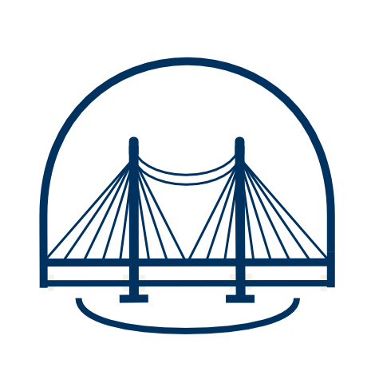

Data Science Projects
机器学习和数据科学项目集合，涵盖深度学习、计算机视觉、自然语言处理等多个领域的研究和应用。
项目概述
作为一名数据科学工程硕士在读学生，我专注于将机器学习技术应用于实际问题解决。这个项目集合展示了我在不同数据科学领域的探索和实践。
从传统的机器学习算法到最新的深度学习模型，从数据预处理到模型部署，每个项目都体现了完整的数据科学工作流程。
主要项目
计算机视觉项目
使用深度学习技术进行图像分类、目标检测和图像分割。包括CNN、ResNet、YOLO等模型的实现和优化。
Python
TensorFlow
OpenCV
PyTorch
自然语言处理
文本分析、情感分析、机器翻译等NLP任务。使用Transformer、BERT等先进模型进行文本理解和生成。
NLTK
spaCy
Transformers
BERT
时间序列分析
金融数据预测、股价分析、趋势预测等时间序列相关项目。使用LSTM、ARIMA等模型进行预测分析。
Pandas
NumPy
LSTM
Scikit-learn
推荐系统
协同过滤、内容推荐、深度学习推荐系统的设计和实现。应用于电商、内容平台等场景。
Collaborative Filtering
Matrix Factorization
Deep Learning
Apache Spark
技术栈
在数据科学项目中，我使用了广泛的技术栈和工具：
Python
TensorFlow
PyTorch
Scikit-learn
Pandas
NumPy
Matplotlib
Seaborn
Jupyter
Docker
AWS
MLOps
学习成果
通过这些项目，我获得了以下认证和成就：
- TensorFlow Developer Certificate (Google)
- Deep Learning Specialization (DeepLearning.AI)
- Machine Learning Engineering for Production (MLOps) (DeepLearning.AI)
- 宾夕法尼亚大学数据科学工程硕士在读